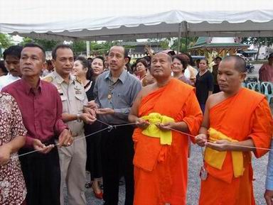

| พิธียกยอดมณฑปของอดีตเจ้าอาวาสวัดท่าไทร |
|
วันที่ ๑๗ มิถุนายน เวลา ๐๘.๕๒ น. พระเทพพิพัฒนาภรณ์ เจ้าอาวาสวัดท่าไทร และเจ้าคณะจังหวัดสุราษฎร์ธานี เป็นประธานฝ่ายสงฆ์ ประกอบพิธียกยอดมณฑปอดีตเจ้าอาวาสวัดท่าไทร ณ วัดท่าไทร ตำบลท่าทองใหม่ อำเภอกาญจดิษฐ์ จังหวัดสุราษฎร์ธานี
 ด้วยพุทธบริษัท และคณะศิษยานุศิษย์วัดท่าไทร ได้ดำเนินการจัดสร้างมณฑปอดีตเจ้าอาวาสวัดท่าไทร เพื่อเป็นที่ประดิษฐานรูปเหมือนหลวงพ่อชม และอดีตเจ้าอาวาสวัดท่าไทร ขณะนี้การก่อสร้างได้ดำเนินการไปบางส่วนแล้ว จึงได้จัดพิธียกยอดมณฑปอดีตเจ้าอาวาสวัดท่าไทรขึ้น เพื่อความเป็นสิริมงคล โดยมีการจัดพิธีทางศาสนา ตั้งแต่เวลา ๐๘.๑๕ น. พระเทพพิพัฒนาภรณ์ กล่าวคำบูชาพระรัตนตรัย อาราธนาศีล กล่าวสัมโมทนียกะถา (สำ-โม-ทะ-นี-ยะ-กะ-ถา) จากนั้น พระเทพพิพัฒนาภรณ์ พร้อมด้วยญาติโยม และศิษยานุศิษย์ ร่วมประกอบพิธียกยอดมณฑปอดีตเจ้าอาวาสวัดท่าไทร พระสงฆ์เจริญชัยมงคลคาถา ญาติโยม และศิษยานุศิษย์ร่วมกรวดน้ำ รับพร เพื่อความเป็นสิริมงคล
|
|
คำแนะนำ โฮมเพจนี้เหมาะสมกับความละเอียด 800 X 600 และ ควรคลิกเมนู Refresh ทุกครั้งที่เข้าชมเพื่อได้รับข้อมูลที่เป็นปัจจุบัน นำเสนอข้อมูลและดูแลระบบ โดย ศูนย์ฝึกอบรมพิมพ์ดีดและคอมพิวเตอร์วัดท่าไทร ประสานงานโดย พระมหาบุญโฮม ปริปุณฺณสีโล watthasai@thai.com หรือ makam216@yahoo.com โทร.08-1569-0309, 08-6690-5892 |